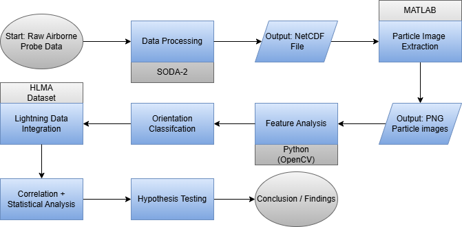

Integrated Microphysics • Lightning Mapping • Orientation Dynamics
This project investigates atmospheric electrification using airborne microphysical measurements and Lightning Mapping Array observations.


Percentage distribution of classified column-like particles during the 23:00–00:00 UTC analysis window.
End-to-end workflow integrating airborne probe data, lightning mapping, feature extraction, orientation classification, and statistical validation.
Figure: Complete processing chain from raw airborne probe data to lightning-correlated orientation statistics and hypothesis validation.